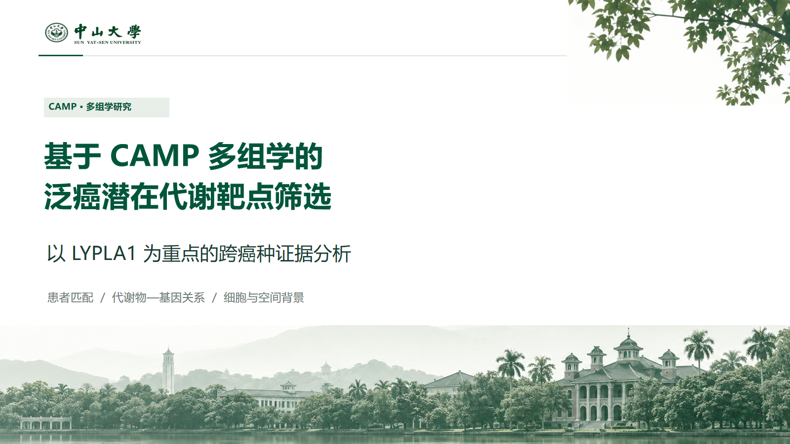
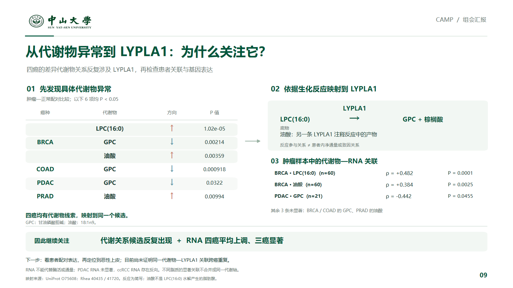
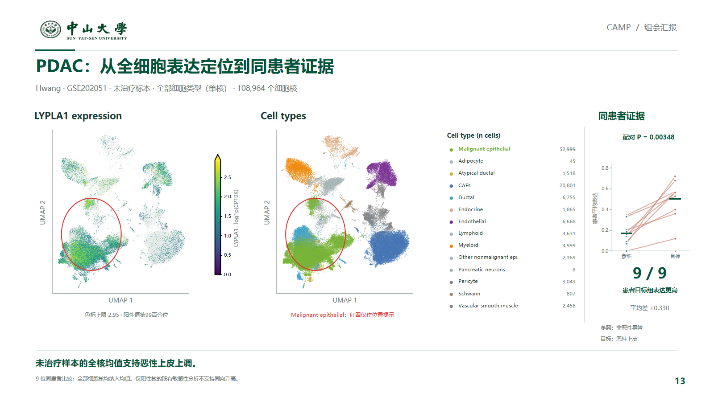
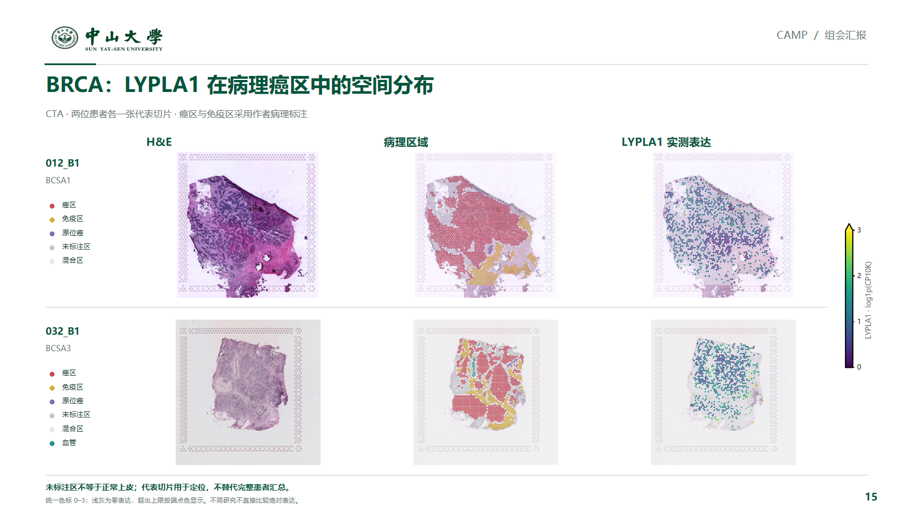
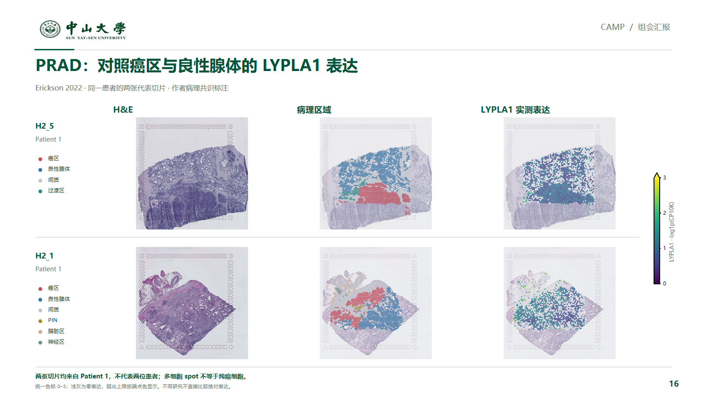
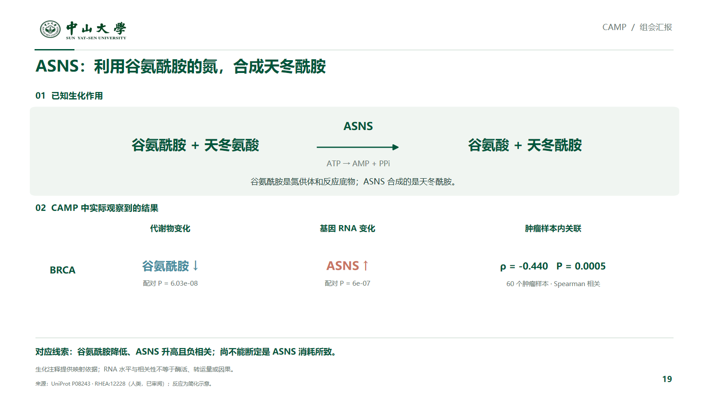
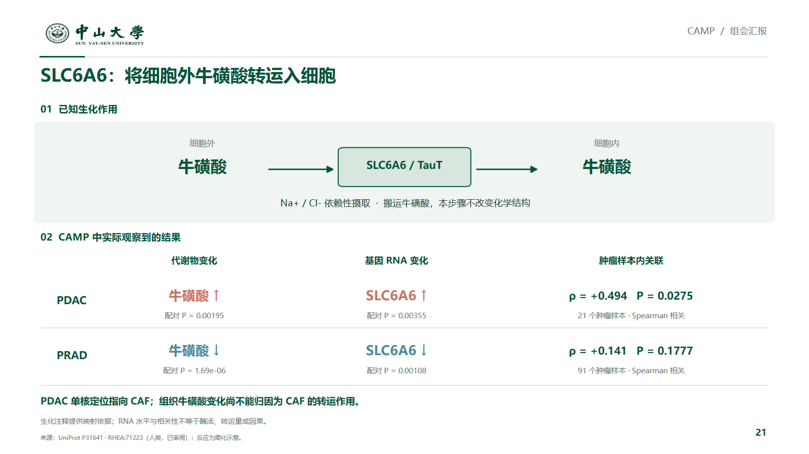
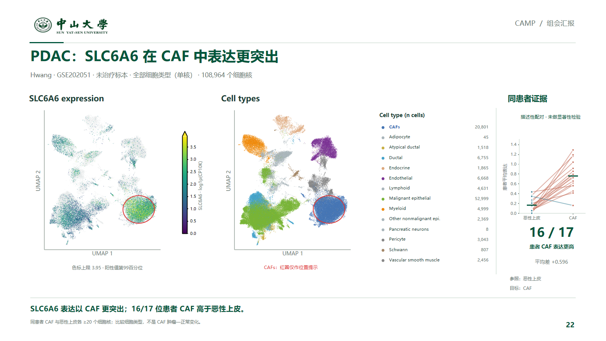
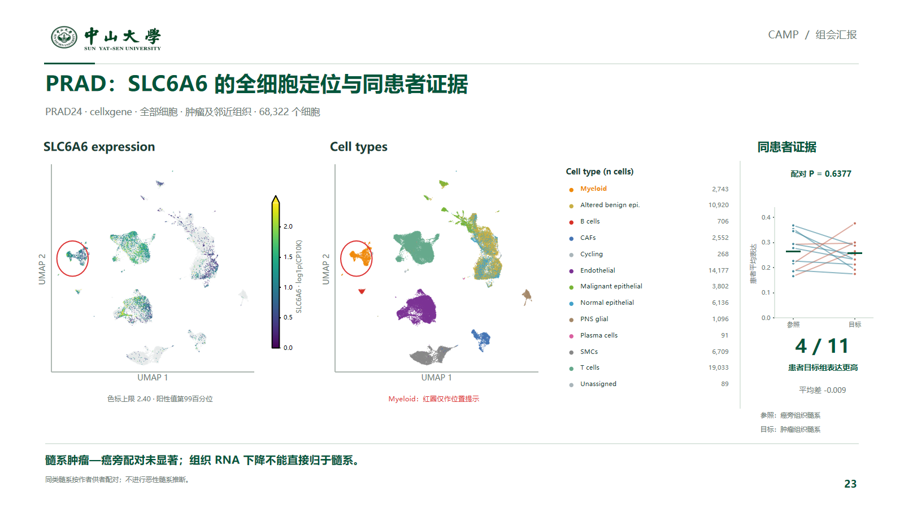
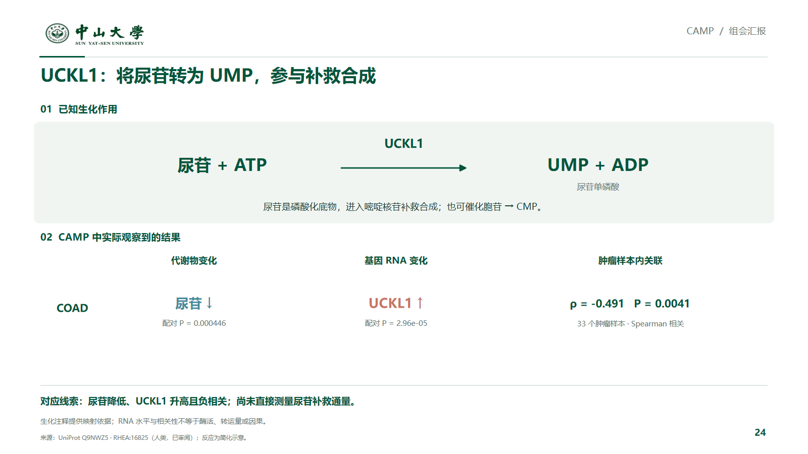

<meta charset="utf-8"><title>CAMP 完整组会汇报</title><style>body{background:#eaf0ec;font:16px Microsoft YaHei;color:#00553b;margin:0}header{position:sticky;top:0;background:white;padding:18px 4%;display:flex;gap:35px}a{color:#00553b}main{max-width:1500px;margin:auto}img{width:100%;display:block;margin:18px 0 30px}</style><header><b>CAMP 完整组会汇报 · 25页</b><a href="CAMP_完整组会汇报_含三个案例_25页.pptx">可编辑PPT</a><a href="CAMP_完整组会汇报_25页预览.pdf">PDF预览</a></header><main></main>